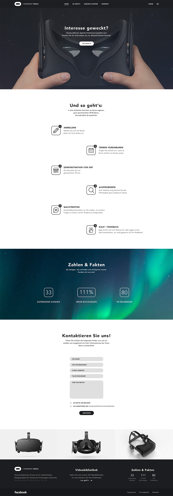
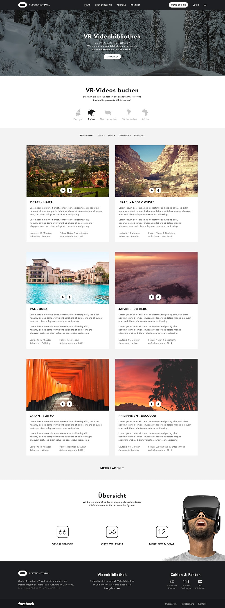

Im Rahmen der Veranstaltung "Website Prototyping" an der Hochschule Furtwangen University ist das Konzept "Oculus Rift & Virtual Reality für Reisebüros" entstanden. Fokus des Kurses waren Konzeptionierung, Testing & Usability. Parallel zum Projekt – von der ersten Zeichnung bis zur responsiven Website – bildete sich schnell ein effizienter Workflow. Zusammen mit meinem Kommilitonen Sebastian, welcher auch Co-Gründer von Magellan war, fokussierten wir uns zunächst auf eine schnelle Art Ideen auszutauschen und Konzepte zu realisieren. Und welche bessere Methode gibt es, als analoges Pen & Paper? Zu unserem Verblüffen stellte sich diese Konzeptionsweise als anregend, kooperativ und einfach hands-on heraus. Während andere Teams sich noch Gedanken zu möglicher Konzeptionssoftware machten, oder sich mit Benutzeroberflächen auseinandersetzten, konnten wir unsere Ideen schneller umsetzen und Feedback austauschen.
Anschließend an die sehr gelungene Konzeptionsphase und den fantastisch kooperativen Prozess, den diese für uns dargestellt hat, teilten wir die Umsetzung in Design & Code auf. Wobei ich Ersteres, und Sebastian Letzteres übernommen hatte. Da wir beide über Wissen und Erfahrung in beiden Arbeitsfeldern verfügen, waren auch während der Umsetzung der Austausch und das Implementieren von Feedback stets gegeben.
Zum Schluss wurde unser Prototyp von Probanden in einem Usability-Lab getestet, ein voller Erfolg für uns beide!
Besagter Prototyp findet sich hier.